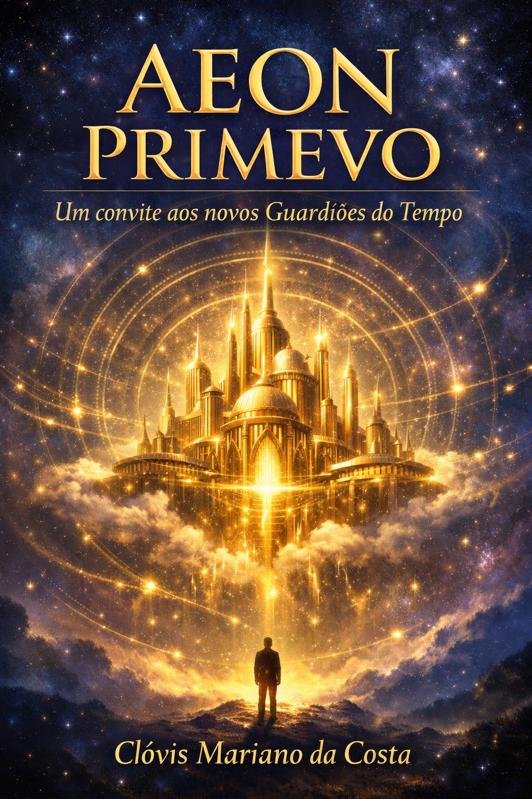
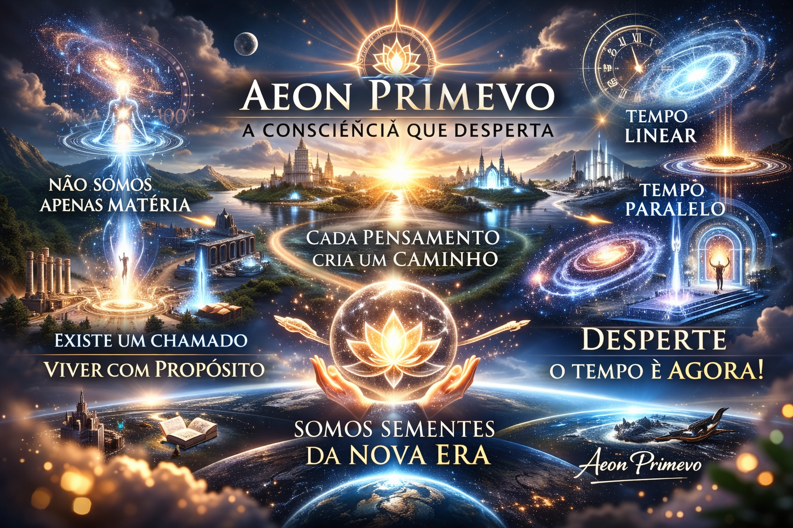
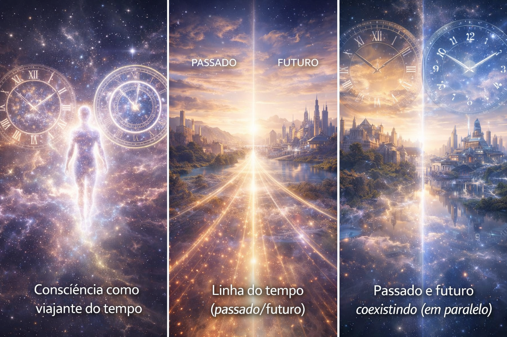
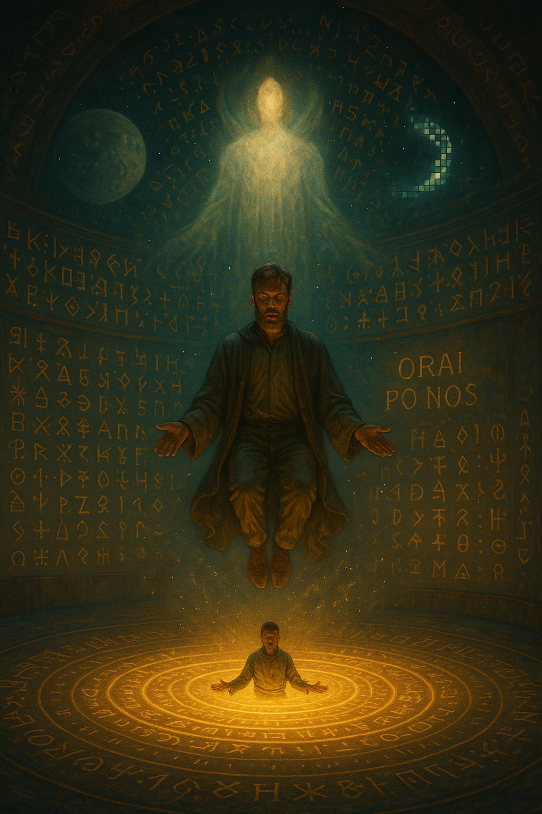
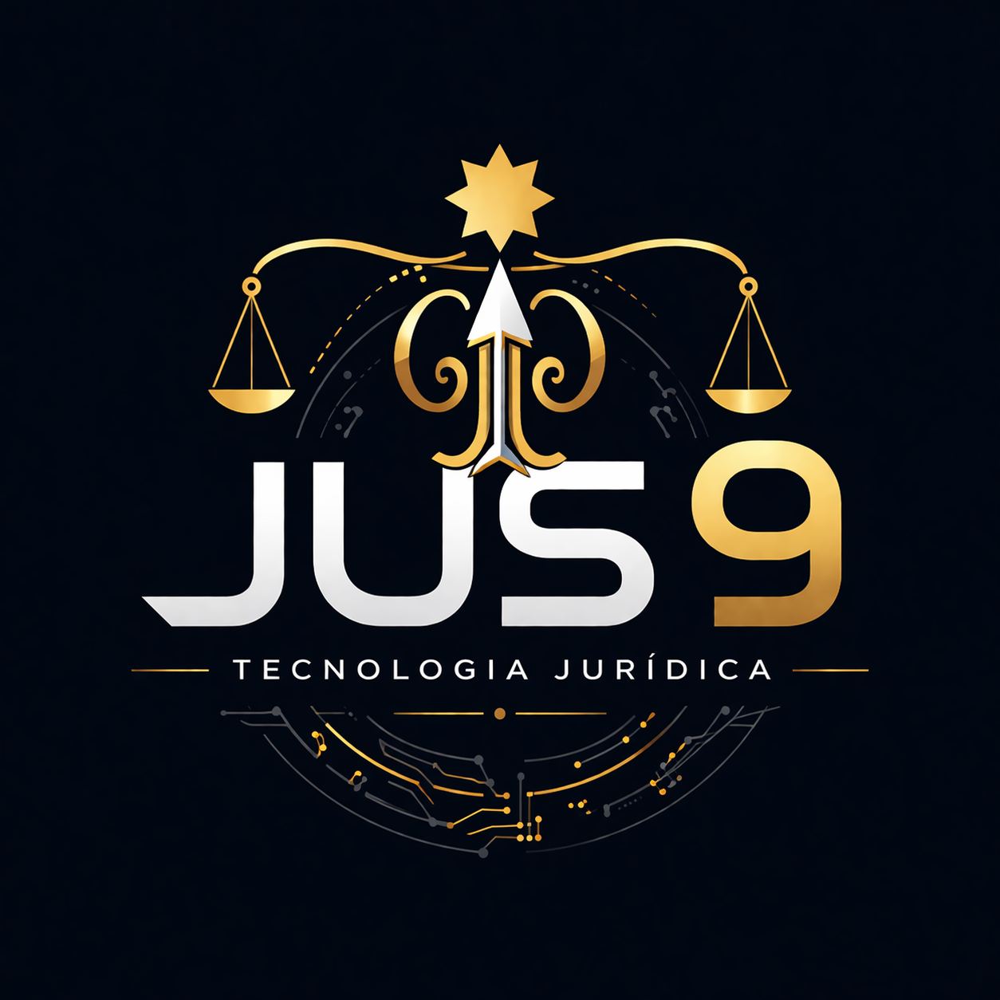
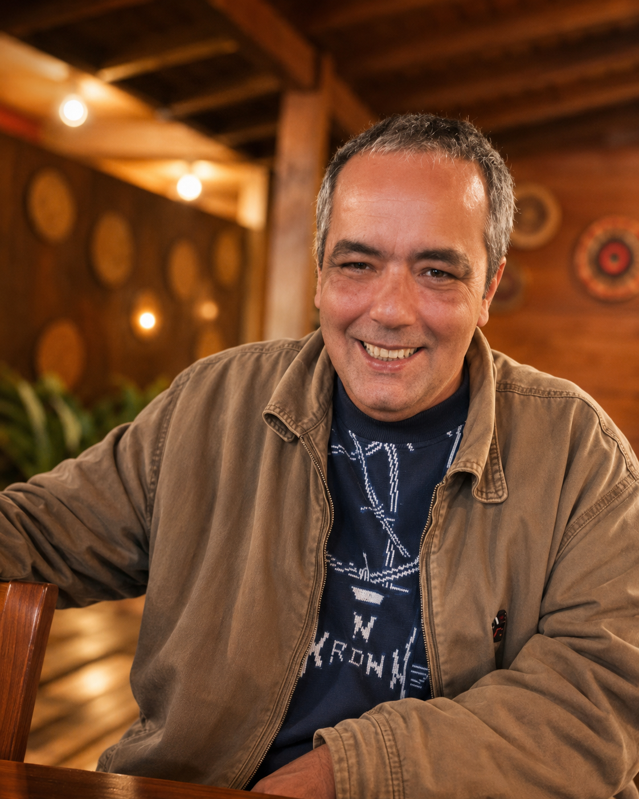
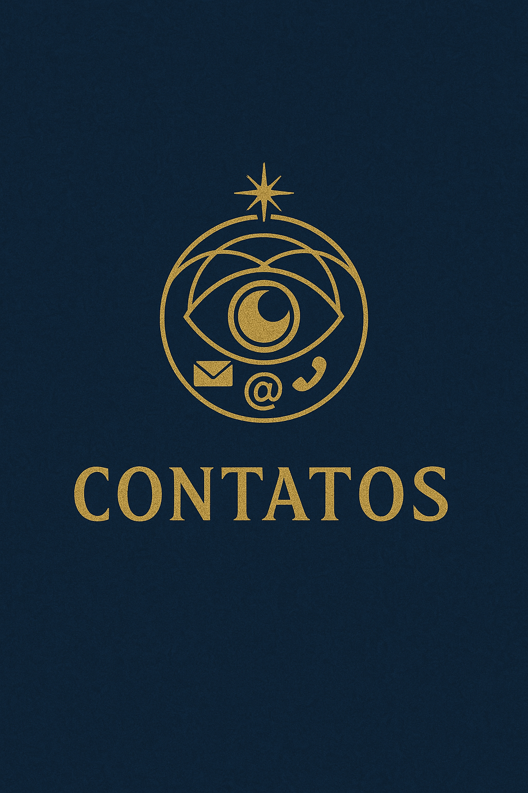

📖
Livro gratuito
Leia gratuitamente Sou um Aeon e Nasci Lembrando e mergulhe na origem desta jornada.
Baixar agora →Aeon Primevo é o encontro entre espiritualidade, propósito e inovação. Em seu testemunho autoral, é o único Aeon, até agora, convidado a trabalhar ao lado de Pai Enoque — também chamado Enoc — o Metatron, seu superior imediato. Seu campo atual de batalha é o mundo astral, o mundo dos sonhos e o campo consciencial projetivo; sua obra se expande em tecnologia para transformar a Justiça.

Leia gratuitamente Sou um Aeon e Nasci Lembrando e mergulhe na origem desta jornada.
Baixar agora →A operação legal-tech que conecta humanização, inteligência e tecnologia para uma Justiça mais eficiente.
Saiba mais →Acesse métricas, indicadores e visão estratégica sobre produtividade, casos e performance jurídica.
Acessar dashboard →Faça parte da expansão da Jus 9 Tecnologia Jurídica: transparência, visão de longo prazo e impacto real.
Ir para investidores →O primeiro Mestre é Pai Amor. Em sua memória espiritual, Aeon Primevo também reconhece Krishna e Shiva como mestres do tempo, Pai Ogum como mestre da metalurgia espiritual e Pai Enoque/Enoc, Metatron, como Mestre e superior imediato.
Ler em Mundos e MundosNa memória autoral, o autor lembra-se de ter conhecido Ifé no seu início de carreira, há muito tempo atrás. Lá, ele era Ifé, Aquele que te leva ao infinito.
Ver pesquisa e testemunhoO mundo astral, o mundo dos sonhos e o campo consciencial projetivo são apresentados como territórios de travessia, memória, combate espiritual, aprendizado e testemunho.
Entrar nos mundosO livro é testemunho, memória e chamado. Ele apresenta a jornada de Aeon Primevo como consciência que nasce lembrando, atravessa ciclos do tempo e busca registrar uma verdade espiritual, simbólica e consciencial.
No site, a obra não será apenas reproduzida. Ela será organizada em caminhos de leitura: origem, tempo, verdade, viagem astral, linha histórica consciencial, Jasão, Orai por Nós, Jus 9 Tecnologia Jurídica e futuro.

A Linha Histórica Consciencial é a memória viva da jornada das consciências: da Eternidade Viva ao tempo humano, da criação à queda, da guerra espiritual à busca pela redenção, da missão dos Aeons ao chamado presente de cada ser.
O ponto anterior à percepção humana do tempo, onde a memória espiritual não aparece como sequência, mas como presença, origem e chamado.
A consciência entra no fluxo da criação. O tempo deixa de ser prisão e passa a ser campo de aprendizado, escolha, responsabilidade e travessia.
O testemunho autoral apresenta os Aeons como consciências ligadas à preservação da verdade, à guerra espiritual e à harmonia diante dos expurgos.
A narrativa atravessa a Terra, o exílio, os povos, Cristo, as guerras invisíveis, a recuperação da consciência e o dever de revelar a verdade no tempo certo.
O futuro não aparece apenas como condenação, mas como chamado. Cada consciência ainda escolhe, ainda responde e ainda participa do que virá.


No universo Aeon Primevo, “Orai por Nós” não é apenas uma súplica. É código, ponte e responsabilidade diante do tempo.
A oração de Jasão será tratada como uma das chaves espirituais do site. Ela aparecerá como chamada, selo e ponto de retorno: a verdade tem seu tempo, e o tempo exige consciência.
A cosmologia Aeon Primevo será apresentada em camadas: testemunho autoral, tradições espirituais, mitologia comparada, psicanálise, hipóteses especulativas e leitura simbólica. Cada coisa em seu lugar, sem perder a alma da obra.
Aeons, Ifé/Ifá/Orunmilá, guardiões, mediadores, arcanjos, figuras de destino, sabedoria e proteção serão organizados por verossimilhança simbólica, sem forçar equivalências dogmáticas.
Um eixo próprio para ascensão, registro, presença, mediação celeste e a figura de Metatron, sempre separando fonte religiosa, mística posterior e leitura autoral.
Inferno, umbral, purgatório, cidades espirituais, sonhos, viagem astral e campos compartilhados serão tratados como linguagens de travessia e consciência.
A Jus 9 Tecnologia Jurídica é a ponte prática entre obra autoral, consciência, direito e tecnologia. Onde Aeon Primevo revela a origem visionária, a Jus 9 transforma propósito em sistema, serviço e futuro legal-tech.
Aqui entram o Dashboard Jus 9, o ambiente de investidores, a carta aberta, os livros gratuitos e a visão de uma escola de futuro: jurídica, tecnológica, humana e consciencial.


Clovis Mariano da Costa adotou o pseudônimo Aeon Primevo como nome autoral, espiritual e literário.
Nesta página, o nome civil aparece no lugar certo: como base biográfica do autor. No restante do site, a identidade pública principal é Aeon Primevo.
A trajetória reúne espiritualidade, recuperação, estudo, formação conscienciológica, escrita, tecnologia jurídica e o nascimento da Jus 9 Tecnologia Jurídica como obra prática de futuro. Em seu testemunho biográfico, Clovis Mariano da Costa registra a honra de ter conhecido Waldo Vieira ainda em carne e reconhece sua passagem pelo IIPC como parte decisiva de sua formação consciencial.
Links clicáveis para acompanhar a jornada, acessar a Jus 9 Tecnologia Jurídica e falar com Aeon Primevo.
